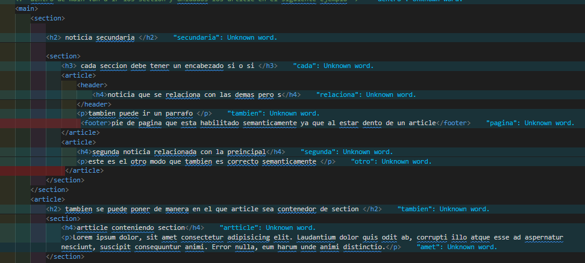
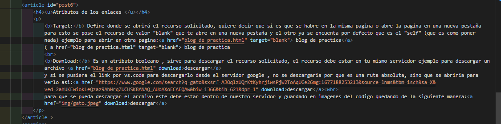

La extructura de un citio web esta formado por un conjunto de etiquetas que se alinean de una manera particular utilizando la etiqueta:
Head:en esta etiqueta se encuentran los datos que no ve el usuario
body:En esta etiqueta se encuentra todo los elementos que podran ver e interactuar los usuarios
Tema inicial 1
En esta face se comenzara a completar las zonas tanto de head como body. Dentro de body: dentro tiene tres diviciones en este orden "header", "main", "footer".
header: en esta etiqueta se utiliza para indicar lo que se encuentra el "menu de la web ", "busqueda",despliegue de menu, servicios, contacto, logotipo de pagina.
Main: etiqueta "main" es el cuerpo central de la pagina ya que la mayor parte del contenido central va en este lugar
footer:es llamado como pie de pagina y es utilizado para poner los datos de la empresa , conactos, informacion
titulos y parrafos
como se contruyen: para los titulos se utiliza la etiqueta del h1 como las mas importante hasta el h9 mayormente solo se utiliza del h1 al h5, tiene un estilo que le ad la propia etiqueta pero su uso rel es semantico que indica el nivel de importancia que tiene cada etiqueta h1
etiqueta p: la etiqueta "P" sirve para contener dentro parrafos de texto que a su vez se puede introducir dentro de esta otras etiquetas que le dan otro valor
elementos de bloque y linea
etiquetas de estructuracion de contenido section, article y aside
section: este mismo es un contenedor generico que agrupa los temas relacionados directamente entre si
article: esta etiqueta es un contenedor que agrupa contenido independiente, que si leyera por si solo se comprenderia del tema principal, estos temas a su vez tendrian una relacion con lo demas de la pagina web
aside: se utiliza para presentar contenido realcionado pero que no forma parte del contenido principal
anidamniento: el termino anidamiento es cuando algunas etiquetas pueden contener otras etiquetas iguales dentro de la principal como ocurre con las etiquetas "section y article"
Ejemplo 1:

article anidado
Elementos de linea
em: etiqueta que le asigna importancia al contenido dentro de está.
strong: esta etiqueta le da mas importancia en el codigo , ademas de que con esta etiqueta tambien se vuelve color negrita su contenido
small: esta etiqueta le quita importancia y queda por debajo del texto en general semanticamente.
Time: etiqueta que se utiliza para designar fecha y hora
i: etiqueta que se utiliza para mayormente agregar iconos a la pagina como tambien pone en cursiva
u: esta etiqueta subraya el texto que se encunetre dentro
b: la etiqueta "b" solamente colorea de negro el texto
sup:etiqueta que pine al contenido por encima de la linea de texto ejemplo, 22 sub:etiqueta que pone por debajo de la linea de texto al contenido H2O2
atributos generales
alteranibutos comunes : su sintaxis es -> --atributo ="valor"
atributos booleanos:su sintaxis es el nombre del atributo, si existen se dan como verdaderos y si no se da como falsos
ejemplos deatributos
class: con esta etiqueta se puede asignar una clase y poder editarlo con css utilizando tambien la etiqueta style
id:es un identificador , gracias a este se puede nombrar este identificador con java scrit, tampoco se puede repetir nombre
title se utiliza para agregar mas datos a una definicion , esta misma se mostrara como una ventana flotante con la informacion adicional, de manera que la etiqueta va de la siguiente manera: < etiqueta="p" + atributo="title"+ valor >
data-*
Introduccion a enlaces
enlaces:los enlaces o conocidos tambien como links son un medio para moverse entre paginas se utiliza obligatoriamente la siguiente etiqueta * a href=" ruta/link "
blog de practica
-Tambien pueden llevar el atributo target que este se utiliza para configurar como queremos visualizar el recurso o citio solicitado
absolutas y rutas relativas
rutas absolutas: Las rutas absolutas son las que llevan obligadamente "http" o "https" ya que la mismas son externas a las paginas que estamos creando, osea que se debe salir a buscar por fuerade proyecto .-Ejemplo: (a href="https://www.google.com"),
ir a google Rutas relativas: Las rutas relativas estan centradas en buscar dentro de las carpetas donde se encuentra el codigo, quiere decir que es relativa al lugar que este , puede buscar dentro del la misma carpeta que seria el mismo nivel utilizando solo el nombre o buscarlo en otras carpetas/niveles y para eso se utiliza de la siguiente manera agregando antes del nombre de la ruta "../" para que los busque en los otros niveles, por cada nivel es un "." .- Ejemplo:
* a href="../ruta/link "
blog de practica
Atributos de los enlaces
Target: Define donde se abrirá el recurso solicitado, quiere decir que si es que se habre en la misma pagina o abre la pagina en una nueva pestaña
para esto se pose el recurso de valor "blank" que te abre en una nueva pestaña y el otro ya se encuenta por defecto que es el "self" (que es como poner nada) ejemplo para abrir en otra pagina: blog de practica
( a href="blog de practica.html" target="blank"> blog de practica
Download: Es un atributo booleano , sirve para descargar el recurso solicitado, el recurso debe estar en tu mismo servicdor ejemplo para descargar un archivo descargar
y si se pusiera el link por vs.code para descargarlo desde el servidor google , no se descargaria por que es una ruta absoluta, sino que se abriría para verlo asi:descargar
para que se pueda descargar el archivo este debe estar dentro de nuestro servidor y guardado en imagenes del codigo quedando de la siguiente manera:descargar

navegacion con anclas
esto quiere decir que se va apoder navegar y movernos dentro de nuestro post a travez de enlaces.
de la siguiente manera.1:_ usar la etiqueta "nav" como menu de navegacion y ademas poner en la etiqueta article/section una identificacion con la etiqueta "id"
(nav)
(p) (a href="#post1") post 1(/a) (/p)
(/nav)
y en la etiqueta "article" iria de la siguiente manera (article id="post1" sin el numeral ) y para abrir este post desde otro citio se debe copiar todo lo que esta dentro del (nav) y agregar la ruta del mismo asi (a href="nombre de ruta+#post1")
{kind=link}